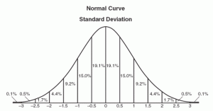

**Please remove all empty COLUMNS FROM THE SPREADSHEET
**Please reserve ROW-1 for Column header names
Please enter the spreadsheet ID here
Please enter the last column letter i.e "A OR AA
Please enter the name of the sheet

A One Way ANOVA statistical test is the measurement statistical significance between 2 or more independent groups(also known as test subjects). The one way anova is very closely related to the repeated measures anova where both the One way anova and the repeated measures anova determine the statistical significance between the difference of means. But where the two statistical tests differ is the difference in test subjects as the One Way Anova does not require the test subjects in the control experiment to remain the sam e through the study whereas a Repeated Measures Anova Statistical test does.
A Repeated measures ANOVA is a measure between 2 or more conditions to determine if there is as significant difference when comparing the means of all conditions. A Repeated Measures ANOVA can also be refe rred to as a within subjects ANOVA or an ANOVA for correlated samples. A Repeated Measures ANOVA also requires that the test subjects that are subject to the different experimental conditions remain the same. For example, the test subjects measured in a controlled experiment measurements must remain and perform for the several experiments that a study will undertake.
A Non normal distribution is an arrangement of a data set in which most values do not cluster in the middle of the range and the rest do not taper off symmetrically toward either extreme.
To compare the means is the take the mean from both of your data sets and declaring if there is a significant difference between the 2 data sets based on the Means of the columns.
A Wilcoxon Signed Rank Test is a test which measures between two experimental conditions for matched pairs of data. This test calculates the ranked mean difference between two data sets to determine if there is a significant difference between the two data sets. This test is an alternative to the Correlated T test. A Wilcoxon Signed Rank test is the alternative to the Correlated T test when the given data breaks the assumption of being in a normal distribution.
A One Way ANOVA statistical test is the measurement statistical significance between 2 or more independent groups(also known as test subjects). The one way anova is very closely related to the repeated measures anova where both the One way anova and the repeated measures anova determine the statistical significance between the difference of means. But where the two statistical tests differ is the difference in test subjects as the One Way Anova does not require the test subjects in the control experiment to remain the sam e through the study whereas a Repeated Measures Anova Statistical test does.
A Repeated measures ANOVA is a measure between 2 or more conditions to determine if there is as significant difference when comparing the means of all conditions. A Repeated Measures ANOVA can also be refe rred to as a within subjects ANOVA or an ANOVA for correlated samples. A Repeated Measures ANOVA also requires that the test subjects that are subject to the different experimental conditions remain the same. For example, the test subjects measured in a controlled experiment measurements must remain and perform for the several experiments that a study will undertake.